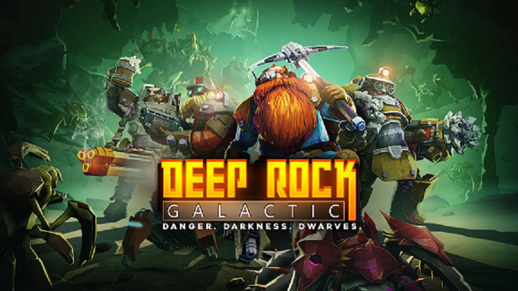

Tommy Nachtigal

Deep Rock Galactic is one of the few games where toxicity is the most frowned upon thing that can happen in the community and in game. One of the main reasons for this is most likely the base of the game, which is PvE or better known as player versus environment. This is important in the reduction of toxicity because it exclusively encourages players to work together because they all stand a better chance of finishing the given task at hand and all other side objectives that come with it. I personally believe that it is important for a game to have a welcoming and supportive community because of the lasting impact that it has for the survivability and replayability of the game. These same attitudes can also help the makers of the game in several different ways. These include credibility, having a long lasting audience, and making the community more patient with the development of updates for the game. This is something you can not say about many games in the current day, as they lack a community with as much support for the game and its developers. Many games will introduce elements that divide the playerbase, but Deep Rock Galactic has yet to do that.
Tommy Nachtigal
Obviously, the first thing I do on campus is wake up. Usually I will brush my teeth, as I heard that you should brush your teeth before you eat anything, and then I will have a Vitamin Water and protein bar for breakfast, as I often do not want to walk anywhere for breakfast when I get up. After I have gotten something to eat and taken my vitamins, I will take a nice warm shower. Often I will remember something that I forgot to do and then freak out for the rest of my shower because I can not do anything about it until I get out. It is usually lunch at this point, so I will head down and check what they have in my dining hall. I will go to my (usually) one class of the day, suffer through it, and then stroll back home. Some friends will often text around this time, and ask if we should all meet for dinner. I am usually able to, so I will text back and will have dinner with them. After that, I will do homework until I can not stand it and play video games online with friends. I will go to sleep at varying times throughout the week, which usually depends on what is going on the next day.
| Example of One of my Days | ||
|---|---|---|
| Time | Activity | Location |
| 10 AM | Wake up and eat | Dorm |
| 10:30 AM | Shower and get dressed | Dorm |
| 12 PM | Lunch | Shaw Hall |
| 3 PM | Class | Comm Arts Building |
| 5 PM | Homework | Dorm |
| 6:30 PM | Dinner with friends | Snyder-Phillips Hall |
| 7:30 PM | Homework | Dorm |
| 9/10 PM | Usually finished with homework and will play video games | Dorm |
| 1/2 AM | Go to sleep | Dorm |